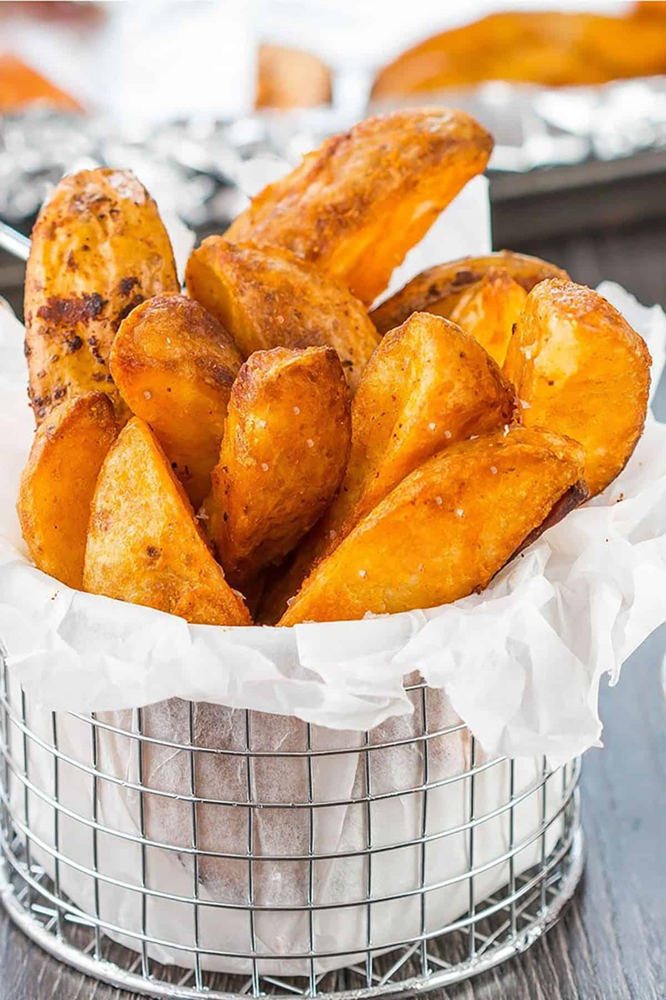

Potato Wedges

Description
Potato wedges are irregular wedge-shaped slices of potato, often large and unpeeled, that are either baked or fried. They are sold at diners and fast food restaurants. In Australia, potato wedges are a common bar food, that are almost always served with some kind of sauce.
The technique was invented by L.A.M. Phelan in the early 1950s and is marketed by the Broaster Company of Beloit, Wisconsin, which Phelan founded. Broasting equipment and ingredients are marketed only to food service and institutional customers, including supermarkets and fast food restaurants
Ingredients
- 1 pound potatoes
- ¼ cup olive oil
- 1 tablespoon ground black pepper
- 1 tablespoon dried oregano
- 1 teaspoon garlic powder
- 1 teaspoon seasoned salt
Steps
- Preheat the oven to 400 degrees F (200 degrees C). Line a baking sheet with aluminum foil.
- Cut potatoes into wedges. Rinse and pat dry. Pour olive oil into a large bowl. Add wedges to the oil; mix until coated.
- Mix black pepper, oregano, garlic powder, and seasoned salt together in another bowl or a large zip-top bag. Add potato wedges and mix around until evenly coated. Spread wedges on the prepared baking sheet.
- Bake in the preheated oven until golden brown and starting to crisp, 20 to 25 minutes.